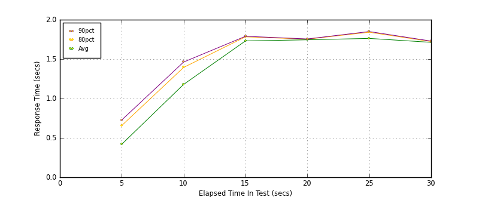
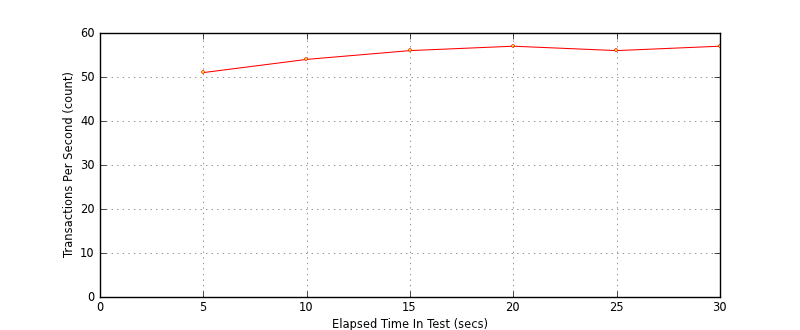
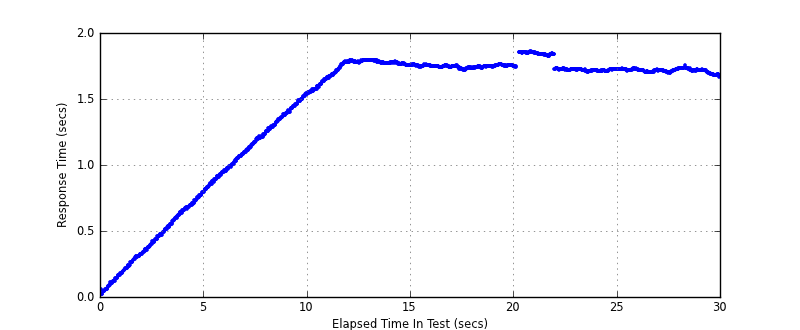

Performance Results Report
Summary
transactions: 1772
errors: 0
run time: 30 secs
rampup: 10 secs
test start: 2014-01-17 14:22:36
test finish: 2014-01-17 14:23:06
time-series interval: 5 secs
workload configuration:
| group name | threads | script name |
|---|
| user_group-1 | 100 | read_user.py |
All Transactions
Transaction Response Summary (secs)
| count | min | avg | 80pct | 90pct | 95pct | max | stdev |
|---|
| 1772 | 0.021 | 1.443 | 1.754 | 1.780 | 1.834 | 1.858 | 0.500 |
Interval Details (secs)
| interval | count | rate | min | avg | 80pct | 90pct | 95pct | max | stdev |
|---|
| 1 | 259 | 51.80 | 0.021 | 0.420 | 0.657 | 0.727 | 0.766 | 0.797 | 0.224 |
| 2 | 271 | 54.20 | 0.812 | 1.179 | 1.394 | 1.463 | 1.511 | 1.545 | 0.212 |
| 3 | 282 | 56.40 | 1.544 | 1.731 | 1.783 | 1.790 | 1.791 | 1.795 | 0.075 |
| 4 | 287 | 57.40 | 1.717 | 1.745 | 1.753 | 1.756 | 1.758 | 1.764 | 0.009 |
| 5 | 284 | 56.80 | 1.704 | 1.763 | 1.841 | 1.850 | 1.854 | 1.858 | 0.060 |
| 6 | 289 | 57.80 | 1.663 | 1.713 | 1.723 | 1.729 | 1.732 | 1.753 | 0.014 |
Graphs
Response Time: 5 sec time-series

Response Time: raw data (all points)
Throughput: 5 sec time-series

Custom Timer: get_tweets
Timer Summary (secs)
| count | min | avg | 80pct | 90pct | 95pct | max | stdev |
|---|
| 1672 | 0.021 | 1.443 | 1.753 | 1.780 | 1.834 | 1.858 | 0.500 |
Interval Details (secs)
| interval | count | rate | min | avg | 80pct | 90pct | 95pct | max | stdev |
|---|
| 1 | 259 | 51.80 | 0.021 | 0.419 | 0.657 | 0.727 | 0.766 | 0.797 | 0.224 |
| 2 | 271 | 54.20 | 0.812 | 1.179 | 1.394 | 1.462 | 1.510 | 1.545 | 0.212 |
| 3 | 282 | 56.40 | 1.543 | 1.731 | 1.782 | 1.789 | 1.791 | 1.795 | 0.075 |
| 4 | 287 | 57.40 | 1.717 | 1.745 | 1.753 | 1.756 | 1.758 | 1.764 | 0.009 |
| 5 | 284 | 56.80 | 1.704 | 1.762 | 1.841 | 1.850 | 1.854 | 1.858 | 0.060 |
| 6 | 289 | 57.80 | 1.663 | 1.713 | 1.722 | 1.729 | 1.731 | 1.753 | 0.014 |
Graphs
Response Time: 5 sec time-series

Response Time: raw data (all points)

Throughput: 5 sec time-series